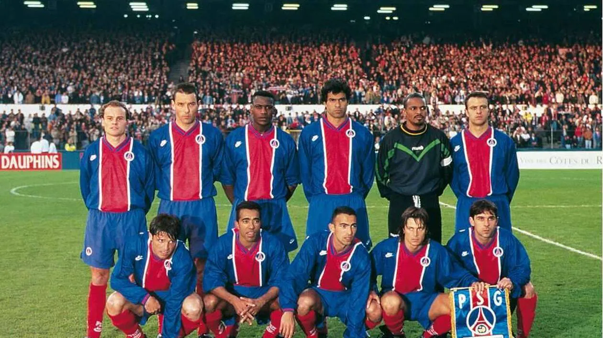
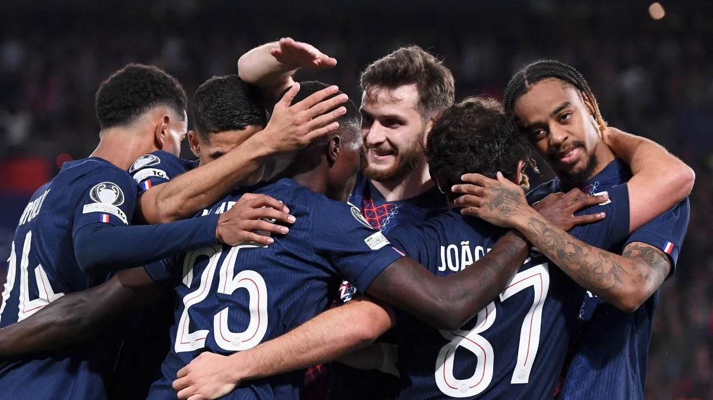
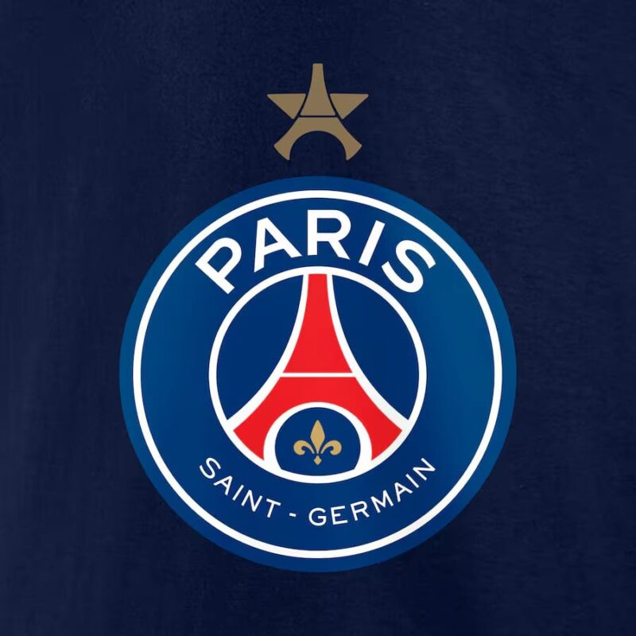

Moments clés du PSG

Victoire européenne 1996
Finale de Ligue des Champions 2020

Premier sacre en 2025


Ce site est dédié à une vision simple : célébrer le PSG comme futur Le Paris Saint-Germain, souvent appelé PSG, est aujourd’hui l’un des clubs les plus emblématiques du football européen. Fondé en 1970, il est né de la volonté de donner à la capitale française une grande équipe capable de rivaliser avec les meilleures formations du continent. Depuis ses débuts modestes, le club a connu une ascension progressive, marquée par des titres nationaux, des joueurs légendaires et une ambition toujours plus grande.
Dans les années 1990, le PSG s’impose déjà sur la scène européenne en remportant la Coupe des Coupes en 1996. Mais c’est surtout à partir des années 2010, avec l’arrivée des investisseurs qataris, que le club change de dimension. En attirant des stars mondiales comme Zlatan Ibrahimović, Neymar ou encore Kylian Mbappé, Paris devient une véritable vitrine du football moderne, avec un objectif clair : remporter la UEFA Champions League.
Cette quête atteint un moment historique en 2020, lorsque le PSG atteint pour la première fois la finale de la Ligue des champions. Malgré la défaite face au Bayern Munich, cette performance marque un tournant : Paris n’est plus un outsider, mais un prétendant sérieux au sommet européen.
Aujourd’hui, le club semble plus proche que jamais d’écrire une nouvelle page de son histoire. Avec une équipe plus équilibrée, une expérience accumulée au fil des campagnes européennes et une mentalité renforcée, le PSG a toutes les armes pour aller au bout. L’idée de soulever une deuxième Ligue des champions n’est plus un rêve inaccessible, mais une ambition réaliste.
Remporter une nouvelle fois la Ligue des champions viendrait confirmer la transformation du PSG : d’un club ambitieux à une véritable puissance européenne. Ce sacre symboliserait l’aboutissement de décennies de travail, de passion et d’investissements, et inscrirait définitivement le Paris Saint-Germain parmi les plus grands clubs de l’histoire du football.
Mettre en avant l’identité du club, son parcours, ses joueurs marquants et l’objectif ultime : soulever la coupe aux grandes oreilles un deuxieme fois pour se rapprocher des plus grands.
Voir les prochaines pages
